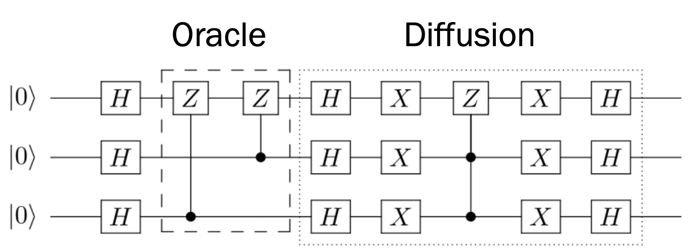
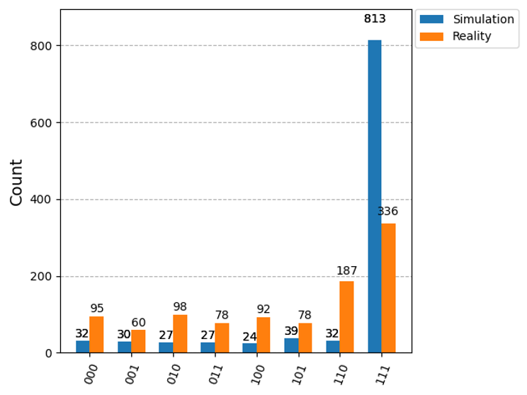
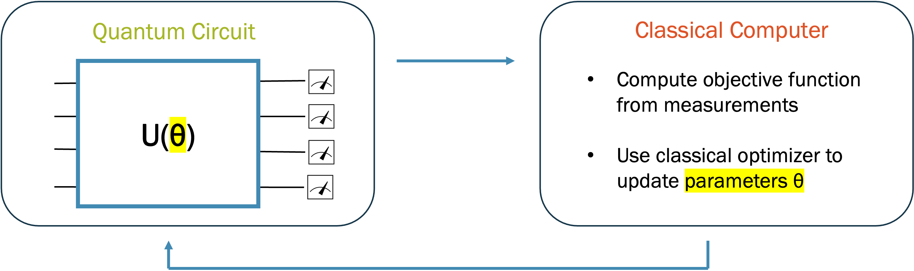
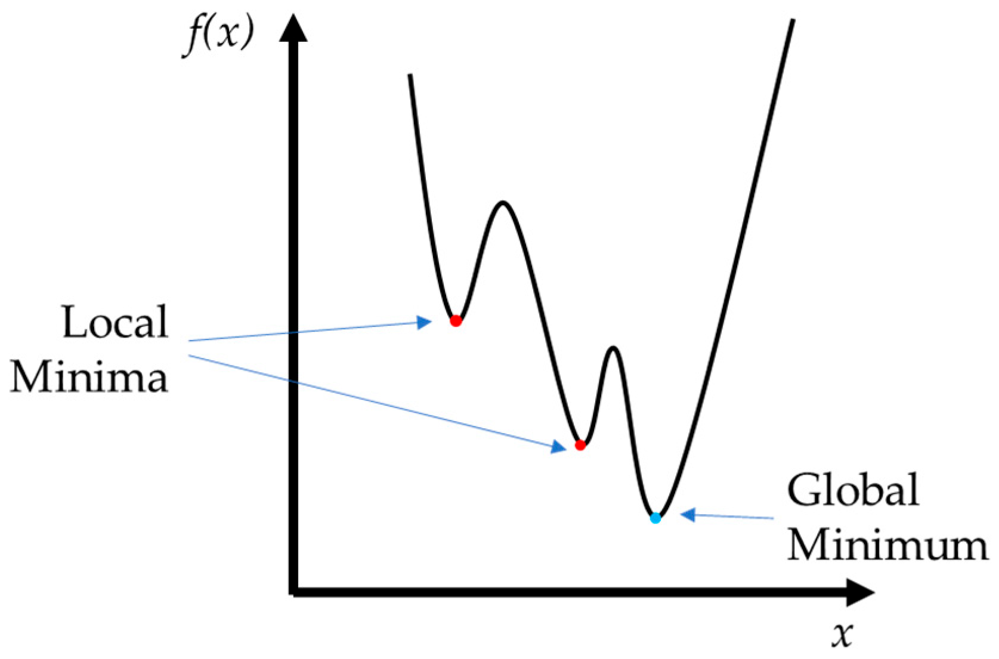
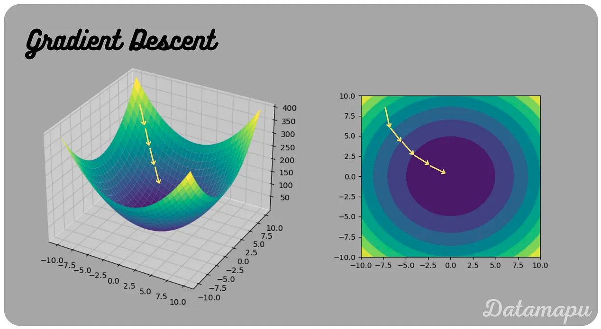
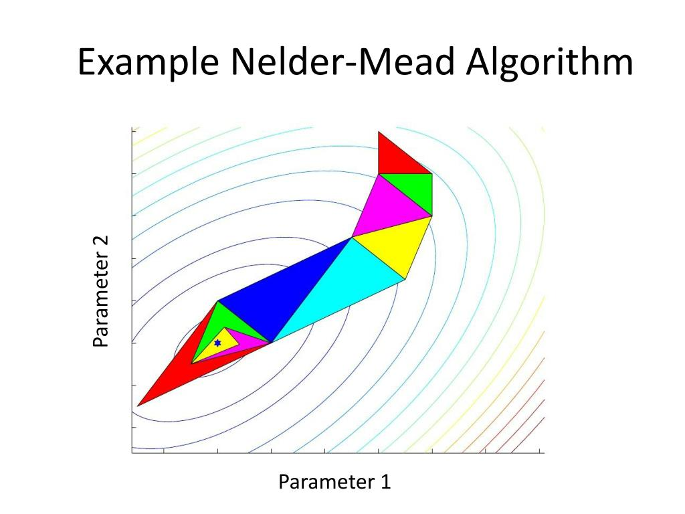
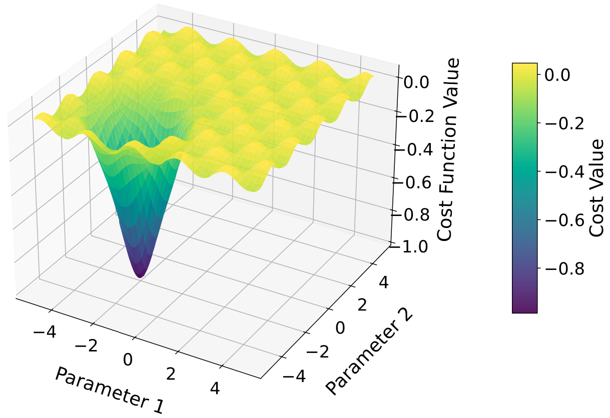
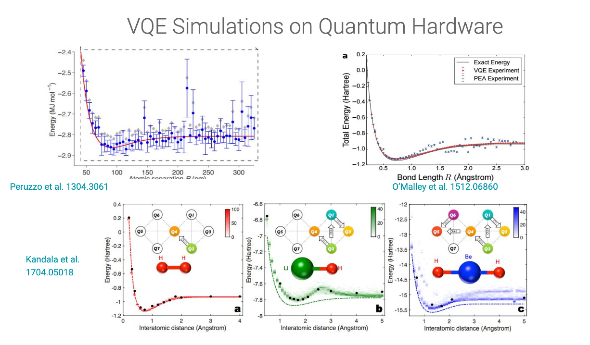
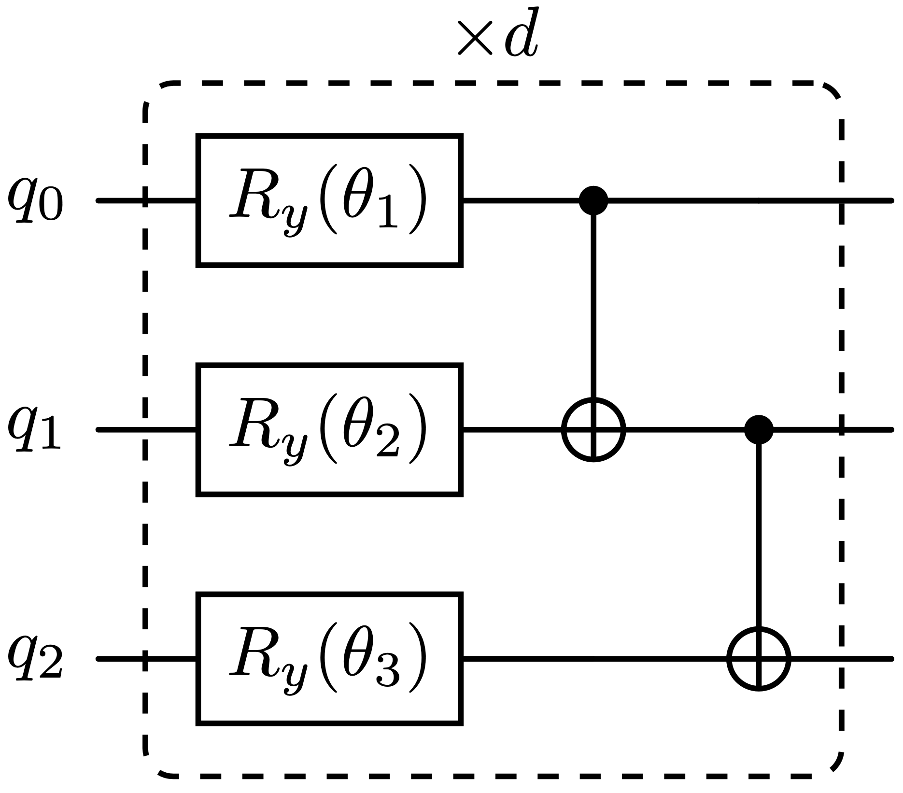
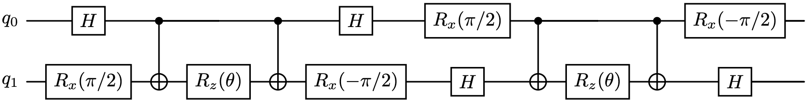

Lecture 9: NISQ Algorithms I#
Warning
These lecture notes are a work in progress and are not a replacement for watching the lecture video, it’s intended to be a supplementary reading after watching the lecture.
Focus of Lecture#
Learning Outcomes#
What is the NISQ era?
Why do we need NISQ algorithms?
Example of NISQ algorithm: Variational Quantum Eigensolver (VQE)
Contents#
NISQ Era
Classical optimisation
Expectation Values
VQE
VQE Ansatzes
Introduction to Hamiltonians
VQE for chemistry
The NISQ Era#
Drawbacks of early quantum algorithms#
Implementing algorithms like Shor’s or Grover’s requires:
Large amounts of qubits
Long circuits
Error correction (to be robust in the presence of noise), further increasing the number of required qubits.

Fig. 68 Grover’s circuit requires many gates, which becomes infeasible on current quantum computers when we scale to larger instances.#

Fig. 69 Noise in the circuit leads to a loss of the expected output distribution, as shown here in the difference between ideal simulation and noisy reality. The more gates we have, the more noise is introduced.#
Variational Quantum Algorithms#

Fig. 70 Variational quantum algorithms use classical optimisation to find the best parameters for a quantum circuit.#
Classical optimisation#
Given a cost function \(f(x)\), find the input \(x\) that makes \(f\) as small as possible:
\(x\) can be a single number or a list of many parameters.
We can usually evaluate \(f(x)\) for any chosen \(x\), but we can’t see the whole function at once.
So we search iteratively: start from a guess, evaluate, improve the guess, repeat.
Stop when \(f\) stops decreasing (convergence).
Hiker analogy
Think of a hiker in thick fog trying to reach the lowest point of a valley. They can only measure the height where they stand, so they try a few nearby steps and keep moving downhill.

Fig. 71 Classical optimisation can get stuck in local minima, where the function is lower than all nearby points, but not the lowest point overall (the global minimum).#
How does an optimiser improve its guess?#
Gradient-based#
The gradient \(\nabla f\) points uphill, so step the opposite way:
\(\eta\) is the step size (learning rate)
Too large: overshoots the minimum
Too small: very slow progress

Fig. 72 Gradient descent repeatedly steps in the direction of steepest decrease. The step size \(\eta\) controls how far each step goes.#
Gradient-free#
Only compare values of \(f\) at several trial points and move towards the better ones
e.g. Nelder-Mead, COBYLA

Fig. 73 The Nelder-Mead method evaluates \(f\) at the corners of a simplex (a triangle in two dimensions), then reflects, expands or shrinks it towards better values.#
Things that can go wrong#
Local minima: the optimiser settles in a valley that isn’t the lowest one
Flat regions: the gradient is almost zero, so progress stalls
Noisy evaluations: if \(f(x)\) is only known approximately, comparisons and gradients become unreliable
Cost per evaluation: methods that need fewer evaluations are preferred when each one is expensive

Fig. 74 A barren plateau: a region where the cost function is almost flat, so the gradient is close to zero and the optimiser has no useful direction to follow. Source: https://arxiv.org/pdf/2511.22861#
NISQ Algorithms on Real Hardware#

Fig. 75 Variational quantum algorithms (e.g. VQE, the variational quantum eigensolver) have already been run on real quantum hardware.#
Expectation Values#
First some recap on expectation values. A single measurement gives one random outcome, but if we repeat the experiment many times, the average outcome is well-defined and predictable. For an observable represented by a Hermitian operator \(\hat{O}\) and a state \(|\psi\rangle\), the expectation value is
This is the average result you’d get measuring \(\hat{O}\) on many identically prepared copies of \(|\psi\rangle\). Recall that individual measurement outcomes are eigenvalues of \(\hat{O}\), denoted \(\lambda_i\). Hence we can equivalently calculate the average as a sum over all these outcomes weighted by probability:
where \(|\lambda_i \rangle\) are the eigenvectors of \(\hat{O}\) and \(P(\lambda_i)\) is the probability of measuring \(\lambda_i\).
Expectation value of Z#
Suppose we wish to measure the expectation of \(Z\) for single qubits state \(|\psi\rangle\). Recall that states \(\color{blue} |0\rangle\) and \(\color{red} |1\rangle\) are eigenstates of \(Z\) with eigenvalues \(\color{blue}+1\) and \(\color{red}-1\)
The expected value of \(Z\) is simply:
We know from the Born rule the probability of each outcome is:
On a simulator we can compute the Born rule probabilities exactly.
On a real machine we can only make measurements of 0 or 1 for each qubit.
On hardware to estimate the expectation value of \(Z\) for a state we must run the circuit (that prepares the state) many times and average.
We run the circuit \(N\) times (\(N\) is called the number of shots) and record:
\(N_0\): the number of \(0\)’s measured
\(N_1\): the number of \(1\)’s measured
Then we can estimate the probabilities
and
Expectation value of X & Y#
How do we measure the expectation value of \(X\)?
The eigenvalues and eigenstates of \(X\) are:
\(+1\) for \(|+\rangle=(|0\rangle+|1\rangle)/\sqrt{2}\)
\(-1\) for \(|-\rangle=(|0\rangle-|1\rangle)/\sqrt{2}\)
We know
but note
Thus
Therefore to measure \(\langle\psi|X|\psi\rangle\)
Prepare the state
Apply a Hadamard gate
Measure whether the qubit is in state 0 or 1
Repeating steps 1, 2 and 3 for \(N\) shots we can use
For the expectation value of \(Y\), the eigenvalues and eigenstates of \(Y\) are:
\(+1\) for \(|i+\rangle=(|0\rangle+i|1\rangle)/\sqrt{2}\)
\(-1\) for \(|i-\rangle=(|0\rangle-i|1\rangle)/\sqrt{2}\)
using
where \(S\) is the phase gate
we get
Therefore to measure \(\langle\psi|Y|\psi\rangle\)
Prepare the state
Apply a \(S^\dagger\) gate
Apply a Hadamard gate
Measure whether the qubit is in state 0 or 1
Repeating steps 1, 2 and 3 for \(N\) shots we can use
Summary of single Qubit Expectation values#
Thus to measure
\(X\) we apply a \(H\) gate
\(Y\) we apply a \(S^\dagger\) gate then a \(H\) gate
\(Z\) we don’t need to add extra gates
When measuring \(X\) or \(Y\) the addition of the extra gates ensures that we are measuring in the correct basis.
We execute the circuit for \(N\) shots and estimate the expectation as
where
\(N_0\) is the number of times we measure \(0\)
\(N_1\) is the number of times we measure \(1\)
Expectation Values of Multiple Qubits#
To measure multiple qubit expectation values:
Add any necessary additional gates to measure in correct basis
Execute the circuit \(N\) times and record the bitstrings of the measured qubits \(x\)
The expectation value is then:
where \(N_x\) is the number of times bitstring \(x\) was measured
\(P_x\) is the parity of bitstring \(x\) which is +1 when there’s an even number of \(1\)’s and -1 when there’s an odd number.
\(P_{101}=1\)
\(P_{10011}=-1\)
Variational Quantum Eigensolver#
Concept of VQE#
Why the ground state matters
In physics the ground state is very important. It determines a system’s stable configuration and low-energy properties (e.g. a molecule’s bond length, reactivity, stability).
flowchart LR
A["Ansatz (parameterized circuit)"]:::red --> B["Measure ⟨H⟩"]
B --> C["Classical optimizer"]
C -->|"Update parameters"| A
C --> D["Ground state energy ≈ min⟨H⟩"]
classDef red fill:#f4cccc,stroke:#cc0000,stroke-width:1px,color:#000;
Parameterized quantum circuit (ansatz) to prepare trial state
Measure expectation value of Hamiltonian with respect to this state
Optimise circuit parameters classically to minimise energy to find approximate ground state
What does “ansatz” mean?
Ansatz is German for “approach”. In physics/maths it means an educated guess used as a starting point to solve a problem.
Variational Principle#
If we guess a state \(|\psi(\theta)\rangle\), its energy \(E\) is at least the ground state energy \(E_0\):
\[ E = {\langle\psi(\theta)|H|\psi(\theta)\rangle}\geq E_0 \]We can get closer to the ground state energy by optimising the parameters \(\theta\) of the trial state \(|\psi(\theta)\rangle\).
A good choice of \(|\psi(\theta)\rangle\) can lead to higher accuracy.
This raises the question: how do we create the parametrised circuit (ansatz)?
VQE Ansatzes#
Recap: Rotation Gates#
The rotation gates are parameterised rotations about the X, Y, Z axes of the Bloch sphere.
Definition
Compact form
They can all be written in the form
where \(I\) is the identity matrix and \(A\in\{X,Y,Z\}\).
Unlike the Pauli gates, which are strict \(180^{\circ}\) flips, these act as continuous tuning dials. For example:
Simple “hardware-efficient” ansatz#
Alternates layers of single-qubit rotations (\(R_y\)) with layers of CNOTs
Native gates for superconducting qubits and trapped ions
Rotations depend on tunable parameters \(\theta_i\)
CNOTs generate the entanglement
Repeating this block \(d\) times (“depth”) increases the expressibility of the ansatz
However, greater depth means:
Longer circuits
More noise on real hardware

Fig. 76 A hardware-efficient ansatz: layers of parameterised single-qubit \(R_y\) rotations alternating with layers of CNOT gates.#
Expressibility
Expressibility is the ability of a circuit to generate a wide variety of states. A more expressible circuit can represent a larger set of states.
Chemistry-inspired ansatz#
Built from physically motivated operators rather than generic gates
Encodes knowledge of the structure of the problem into the circuit
More parameter-efficient and physically meaningful for chemistry problems
Typically requires deeper circuits to implement
Example: Unitary Coupled Cluster (UCC) Ansatz:

Fig. 77 A Unitary Coupled Cluster (UCC) ansatz circuit.#
VQE Workflow#
flowchart TD
A["Problem"]:::red -->|"Encode"| B["Hamiltonian form H"]:::orange
B --> VQE
subgraph VQE["VQE"]
direction TB
C["Vary quantum state |ψ(θ)⟩ <br/>with parametrised circuit"]:::blue
D["Classical optimiser<br/>updates θ so 𝐸 decreases"]:::blue
C -->|"Measure 𝐸 = ⟨ψ(θ)|H|ψ(θ)⟩"| D
D -->|"Update Parameters"| C
end
VQE -->|"repeat until 𝐸 converges"| E["Solution"]:::green
style VQE fill:#e9d8fd,stroke:#6a3ea1,stroke-width:1px,opacity:1
classDef red fill:#f4cccc,stroke:#cc0000,stroke-width:1px,color:#000;
classDef orange fill:#fce5cd,stroke:#b45f06,stroke-width:1px,color:#000;
classDef blue fill:#cfe2f3,stroke:#1155cc,stroke-width:1px,color:#000;
classDef green fill:#d9ead3,stroke:#38761d,stroke-width:1px,color:#000;
Generate normalised ansatz state \(|\psi(\theta)\rangle\) on quantum computer
Measure \(E = \langle\psi(\theta)|H|\psi(\theta)\rangle\)
Optimise \(\theta\) on a classical computer so that \(E\) decreases
Repeat until \(E\) converges to obtain an approximate ground state
VQE on NISQ Hardware#
Hybrid algorithm
Quantum computer prepares parameterised trial state (ansatz) and measures the energy
Classical optimiser updates parameters to minimise energy
Loop repeats until convergence
Why it suits NISQ
Classical optimiser reduces workload for QPU: only use quantum for the part that is inherently quantum
Flexible ansatz can be tailored to hardware connectivity
Limitations
Long circuits, many gates: decoherence and gate errors dominate
Accuracy bar is high: to compete with classical methods
Barren plateaux: gradients vanish exponentially with system size, stalling optimisation
Measurement overhead: many circuit repetitions needed per energy evaluation, and per optimisation step
Introduction to Hamiltonians#
In Quantum Physics the energy is represented by an operator, called the Hamiltonian, \(H\). The expected energy of a given state \(|\psi\rangle\) is the expectation value of the Hamiltonian
The ground state of a quantum system is the state with the lowest energy. To find the ground state we find the state that minimizes the expected Energy. The ground state is very important as it is the state of system at zero temperature (and at low temperatures the system will be at approximately the ground-state). Thus if we are interested in the properties of a molecule at room temperature, a starting place is to investigate the ground-state properties.
The Ising Model#
Let’s look at a simple physics model to get a feel for Hamiltonians. We consider a single electron bound to an atom. Recall that electrons have a property called spin which can interact with external magnetic fields. The spin can be either up or down (or in a superposition of both). We’ll denote the up spin state as \(|0\rangle\) and the down spin state as \(|1\rangle\).
If a magnetic field, \(B\), is applied along the x-axis the Hamiltonian is
with ground state
Electrons can interact with each other via their spins. A two electron state is represented as \(|ij\rangle\), here the electron at atom 1 has spin \(i\) and the electron at atom 2 has spin \(j\). So for example \(|01\rangle\) would mean the electron at atom \(1\) has spin up and the electron at atom \(2\) has spin down.
A common way spins interact is through the Hamiltonian
For this Hamiltonian
If \(J>0\): The ground-states are \(\{|00\rangle, |11\rangle\}\), i.e. both electrons are aligned in spin
If \(J<0\): The ground-states are \(\{|01\rangle, |10\rangle\}\), i.e. both electrons are anti-aligned in spin
Now let’s put both pieces together:
A magnetic field in the x-axis
Neighbouring interactions between electrons
For two qubits we get
This model is known as the Ising model, for \(n\) atoms (qubits) arranged in a chain it is
where we note that the interactions are only between electrons on neighbouring atoms.
VQE for chemistry#
In quantum chemistry we are interested in solving the electronic structure problem, this means to solve the Schrödinger equation for the electrons in a given molecule. This can given us information on a range of quantities including: a molecule’s bond length’smolecules, the energy required to remove an electron from a molecule or the structure of a molecule at low temperature.
It’s an amazing and surprising fact that many systems in both phsyics and chemistry can be described by Hamiltonians composed of Pauli operators. To give one example the Hamiltonian for a hydrogen molecule (two Hydrogen atoms) is approximately
Here the basis states are slightly different than before
0 represents spin up on atom 1
1 represents spin up on atom 2
2 represents spin down on atom 1
3 represents spin down on atom 2
Thus for example:
\(|0000\rangle\) represents the state with no electrons
\(|0111\rangle\) represents the state with one electron spin up on atom 1, and two electrons on atom 2 (spin up and down).
For computing the ground-state energy of molecules we can use the VQE workflow as previously described. We just have to add an extra step of mapping the molecule to the qubits of the quantum computer. We can do this by associating each molecular orbitas (a possible spatial configuration for an electron in the molecule) with two qubits:
\(|00\rangle\) = empty orbital
\(|01\rangle\) = one electron (spin down)
\(|10\rangle\) = one electron (spin up)
\(|11\rangle\) = two electrons (paired i.e. opposite spins)
When running the VQE for quantum chemistry we often benchmark our results against:
Hartree-Fock (HF): An approximate way of solving the Schrödinger equation. It uses an average of the electron interactions. An efficient method but with limited accuracy.
Full Configuration Interaction (FCI): An exact way of solving the Schrödinger equation. It considers all possible electron configurations. The computational cost of FCI scales exponentially with molecule size, so it can only be used for small molecules.